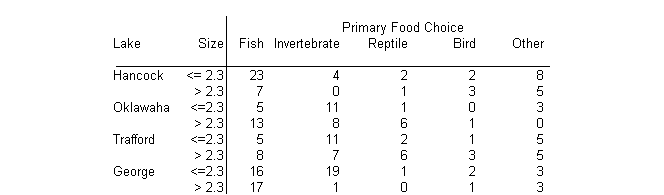
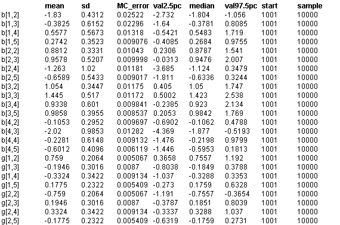

![[aligators0]](aligators0.bmp) Alligators: multinomial - logistic
Alligators: multinomial - logistic
regression
Agresti (1990) analyses a set of data on the feeding choice of 221 alligators, where the response measure for each alligator is one of 5 categories: fish, invertebrate, reptile, bird, other. Possible explanatory factors are the length of alligator (two categories: <= 2.3 metres and > 2.3 metres), and the lake (4 catgeories: Hancock, Oklawaha, Trafford, George). The full data is shown below.

Each combination of explanatory factors is assumed to give rise to a multinomial response with a logistic link, so that for lake i, size j, the observed vector of counts X
ij.
= X
ij1
,...,X
ij5
has distribution
X
ij.
~ Multinomial(p
ij
.
,n
ij
)
p
ijk
=
f
ijk
/
S
k
f
ijk
f
ijk
= e
a
k
+
b
ik
+
g
jk
where n
ij
=
S
k
X
ijk
, and
a
1
,
b
i1
,
b
1k
,
g
j1
,
g
1k
= 0 for identifiability. This model is discussed in detail in the Classic BUGS manual (version 0.5) in the section on
Multionomial LogisticModels
. All unknown
a
's,
b
's ,
g
's are initially given independent "noninformative" priors.
The Classic BUGS manual (version 0.5) discusses two ways of fitting this model: directly in the form given above or by using the multinomial-Poisson transformation which will be somewhat more efficient. Both techniques are illustrated in the code given below.
model
{
# PRIORS
alpha[1] <- 0; # zero contrast for baseline food
for (k in 2 : K) {
alpha[k] ~ dnorm(0, 0.00001) # vague priors
}
# Loop around lakes:
for (k in 1 : K){
beta[1, k] <- 0
} # corner-point contrast with first lake
for (i in 2 : I) {
beta[i, 1] <- 0 ; # zero contrast for baseline food
for (k in 2 : K){
beta[i, k] ~ dnorm(0, 0.00001) # vague priors
}
}
# Loop around sizes:
for (k in 1 : K){
gamma[1, k] <- 0 # corner-point contrast with first size
}
for (j in 2 : J) {
gamma[j, 1] <- 0 ; # zero contrast for baseline food
for ( k in 2 : K){
gamma[j, k] ~ dnorm(0, 0.00001) # vague priors
}
}
# LIKELIHOOD
for (i in 1 : I) { # loop around lakes
for (j in 1 : J) { # loop around sizes
# Multinomial response
# X[i,j,1 : K] ~ dmulti( p[i, j, 1 : K] , n[i, j] )
# n[i, j] <- sum(X[i, j, ])
# for (k in 1 : K) { # loop around foods
# p[i, j, k] <- phi[i, j, k] / sum(phi[i, j, ])
# log(phi[i ,j, k]) <- alpha[k] + beta[i, k] + gamma[j, k]
# }
# Fit standard Poisson regressions relative to baseline
lambda[i, j] ~ dflat() # vague priors
for (k in 1 : K) { # loop around foods
X[i, j, k] ~ dpois(mu[i, j, k])
log(mu[i, j, k]) <- lambda[i, j] + alpha[k] + beta[i, k] + gamma[j, k]
cumulative.X[i, j, k] <- cumulative(X[i, j, k], X[i, j, k])
}
}
}
# TRANSFORM OUTPUT TO ENABLE COMPARISON
# WITH AGRESTI'S RESULTS
for (k in 1 : K) { # loop around foods
for (i in 1 : I) { # loop around lakes
b[i, k] <- beta[i, k] - mean(beta[, k]); # sum to zero constraint
}
for (j in 1 : J) { # loop around sizes
g[j, k] <- gamma[j, k] - mean(gamma[, k]); # sum to zero constraint
}
}
}
Data
( click to open )
Inits for chain 1 Inits for chain 2
( click to open )
Results
A 1000 update burn in followed by a further 10000 updates gave the parameter estimates
